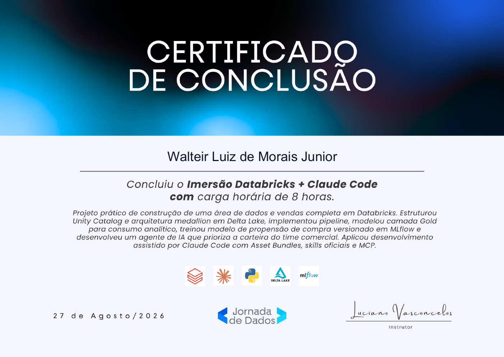
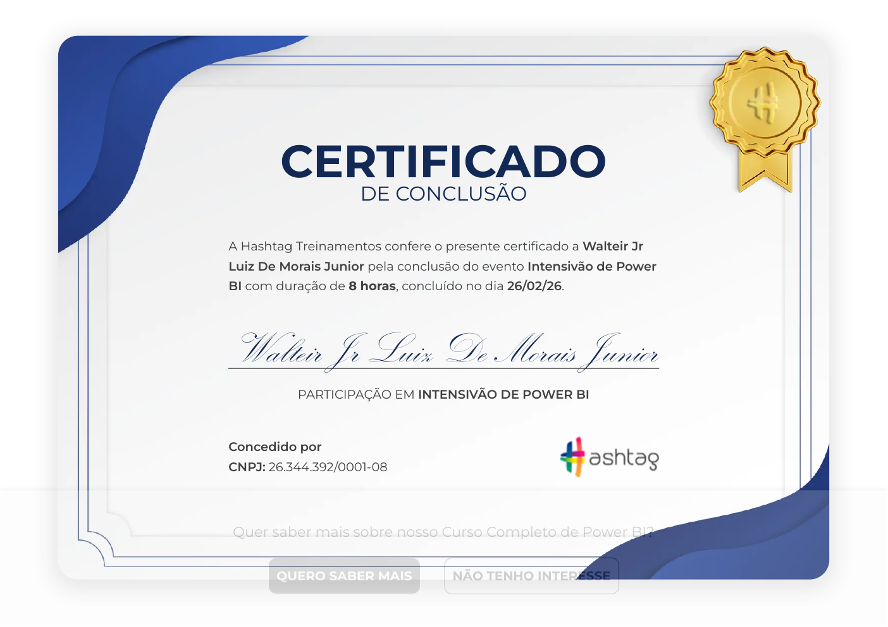
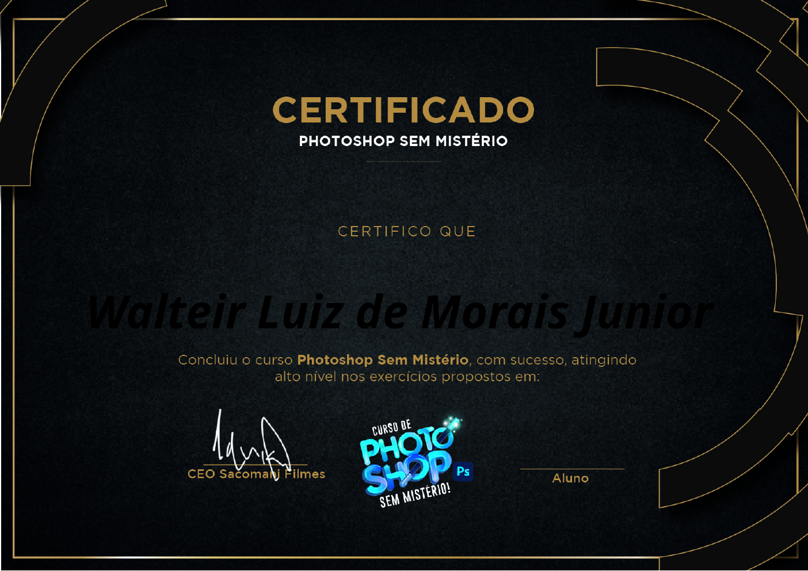

Imersão Databricks + Claude Code
Projeto prático de área de dados e vendas com Databricks, Delta Lake, MLflow e desenvolvimento assistido por IA.
< Estudante de IA · Ciência de Dados · Machine Learning />
Construindo soluções inteligentes com Python, dados e aprendizado de máquina. Apaixonado por transformar dados em insights reais.
Estudante de Inteligência Artificial com foco em ciência de dados, machine learning e desenvolvimento de soluções práticas. Estou cursando disciplinas avançadas como Python aplicado à IA, Cloud Computing e Análise de Dados.
Meu objetivo é construir sistemas inteligentes que gerem valor real, unindo fundamentos matemáticos sólidos com código eficiente e boas práticas de engenharia.
Vamos conversar →Graduação em andamento na Uniube





Projeto prático de área de dados e vendas com Databricks, Delta Lake, MLflow e desenvolvimento assistido por IA.
Participação em formação intensiva de Power BI.
Formação intensiva sobre agentes de inteligência artificial.
Especialista em vendas com Facebook Ads e gestão de campanhas.
Curso concluído com foco nos exercícios práticos de Photoshop.
Assistente desktop em Python ativado por palmas e voz, com planos multi-etapa, integração com Obsidian e console local.
Análise estatística de ações do varejo na B3, com coleta de dados históricos, visualizações e relatórios de resultados.
Pipeline de dados para admissão universitária: SQL, análise exploratória, engenharia de atributos, clustering e classificação preditiva.
Pipeline de análise de sentimentos em tweets com tokenização, lematização, TF-IDF e classificação por regressão logística.
Rede neural convolucional para classificação de gatos e cachorros, com data augmentation, regularização e avaliação de desempenho.
Projeto de sistema para gestão de loja, desenvolvido como parte da evolução prática em programação e banco de dados.
Interface de dashboard para visualização de informações e exploração de dados em uma experiência web organizada.
Estou aberto a conversas sobre oportunidades, projetos colaborativos, estágios ou simplesmente trocar ideia sobre IA e tecnologia.